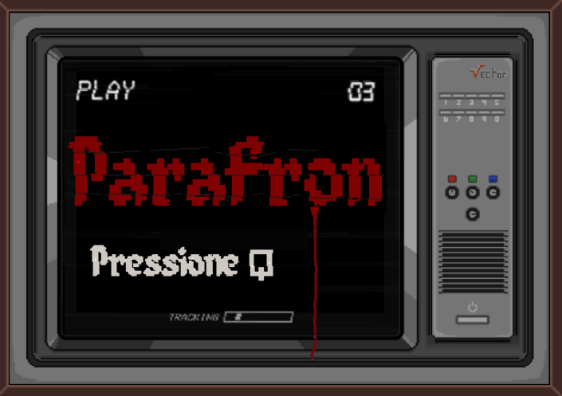

Parafron
Kauã Rosales Pereira e Juan Pablo
Ano da criação: 2022
Gênero: Jogo de minigames e de narrativa
Tecnologias ou técnicas utilizadas: HTML e JAVASCRIPT
História: Parafron é um jogo de narrativa sobre o mundo das drogas e seus aspectos psicológicos que se utiliza de minigames como formas para o jogador avançar pela história.
Disponibilização para: Página do jogo